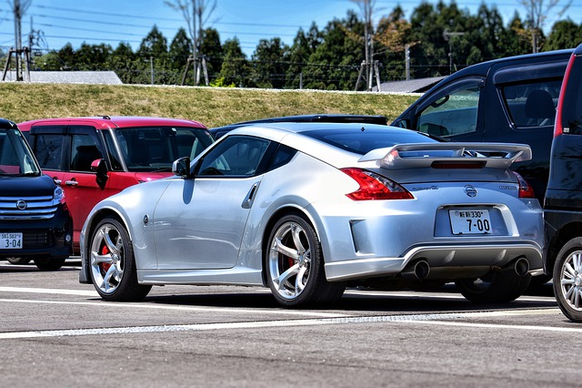

The Nissan Z-car is a sports car which has been manufactured by Nissan Motors Ltd, in six generations, since 1969. The original Z was sold from October 1969 in Japan, as the Nissan Fairlady Z, at Nissan Exhibition dealerships that previously sold the Nissan Bluebird.
The earlier models of the Nissan Z were built at the Nissan Shatai plant in Hiratsuka until 2000, while the later models (350Z and 370Z) are built at Oppama (2002–2004) and Tochigi (2004–present). Enthusiasts praise the cars for their looks, reliability, performance, and affordability. Every Z car has been sold in Japan as the Fairlady Z and elsewhere under the names Nissan S30, Nissan S130, Nissan 300ZX, Nissan 350Z and Nissan 370Z.
The Z line of sports cars from Nissan is an iconic sports car that has been one of Nissan's flagship sports cars ever since its creation in the mid-1900s. The car gained massive popularity with the youth and Nissan enthusiasts worldwide as it was one line of cars that was exported to other countries. Despite being exported to other countries however, the Z line of cars were renamed to suit the markets they were being sent to.
As mentioned above, the car is dubbed the Fairlady Z in Japan as it was it's original name upon production. However, as it was exported to other markets, it was renamed to suit the global market it was being made available to.
The most notable change in its naming was the company it was being sold under whenever exported to other markets. Instead of being sold under Nissan, early production models of Nissan that were exported to other markets were sold under the company Datsun, another car company that was owned by Nissan. The same thing happened to Nissan's Z model of cars as the early Nissan 240z's as its official name in the American market was the Datsun 240z. Other models that were sold under the Datsun included the Datsun C10 and the Datsun 620s.
The Fairlady has received a drastic change ever since its mid-90s reveal. The most notable thing about it's modernization is its more 'bubble' kind of appearence that is very different from its early counterparts. The latest model in the Z-line, the 370z (as pictured above) shares it appearence with it's early 2000s model, the 350z. The main notable difference between the 370z and 350z is it's appearence. Despite still retaining the 'bubble' shape that the 350z had, the 370z carries a more aggressive look due to its sharper updates in both the front and back of the car.
Between the 350z and the 370z, I would personally choose the 350z if given the chance to own one. The reason for it is admittedly its price as finding one online is rather cheap (about $5,000 at least) and is considered by many to be a decent car that drives really well. Its 3.5L V6 engine also is rather capable, as it produces at least 260 horsepower which is rather powerful at least for a beginner looking for a car.